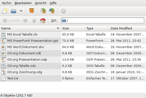
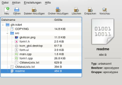
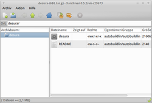
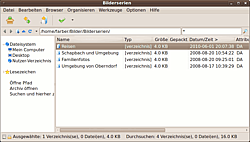

Archivmanager
Dieser Artikel wurde für die folgenden Ubuntu-Versionen getestet:
Dieser Artikel ist größtenteils für alle Ubuntu-Versionen gültig.
Zum Verständnis dieses Artikels sind folgende Seiten hilfreich:
Dateien in Archive zu verpacken und ihre Größe durch Kompressionsalgorithmen zu verkleinern ist ein häufiger Vorgang in der Datenverarbeitung. Grundsätzlich unterscheidet man zwischen Archiven und komprimierten Dateien. Ein Archiv ist ein unkomprimierter Behälter für Dateien. Dieses Archiv kann durch Kompressionsverfahren komprimiert werden. Es gibt allerdings ein paar Formate, die gleich auch eine Komprimierung beinhalten.
Archivformate¶
Es gibt sehr viele verschiedene Formate zum Komprimieren von Daten. Soweit bekannt, lassen sich sämtliche Formate unter Linux benutzen, zumindest jedoch kann man die Dateien öffnen (entpacken). Bekannte Formate unter Linux/Unix sind folgende:
gzip - Kurze Laufzeit, Endung .gz
bzip2 - Hohe Kompressionsrate, Endung .bz2
Brotli - hohe Kompressionsrate bei hoher Geschwindigkeit, Endung .br
xz - Neueres, 7z-ähnliches Format, Endung .xz
Hierbei ist zu beachten, dass unter Linux erst die oft genutzte Kombination aus dem Archivprogramm tar und einer Kompression mittels gzip oder bzip2 ein komprimiertes Archiv ergibt. .tar.gz bzw. .tar.bz2-Dateien sind also .tar Archive, die mit dem entsprechenden Kompressionsverfahren komprimiert wurden.
Unter Windows sind vor allem die folgenden Formate gebräuchlich, die sich aber auch unter Linux benutzen lassen:
ZIP - Das wohl bekannteste Packformat, gleichzeitig auch die Dateiendung .zip
RAR - Bekanntes Dateiformat, gleichzeitig auch die Dateiendung .rar
ACE - ACE Packformat, sehr leistungsfähig, gleichzeitig auch die Dateiendung .ace
7z - Freies Packformat, sehr leistungsfähig und quelloffen. Dateiendung .7z
Welches Format man wählt, hängt vom Verwendungszweck ab. Möchte man Mails auf einem Server im laufenden Betrieb komprimieren, dann sollte der Prozess den Server nicht zu stark beanspruchen, damit der Mailverkehr nicht beeinträchtigt wird. Hat man jedoch nur sehr wenig Platz, so kann man eine stärkere Komprimierung wählen. Dies benötigt jedoch auch mehr Leistung und dauert länger. Der folgende Test samt Auflistung stammt aus dem Artikel qt4-fsarchiver und soll ein Gefühl für Komprimierung und Geschwindigkeit vermitteln.
Für den gesamtem Test lagen folgende Bedingungen zu Grunde:
Quellmedium: ganze Partition
Partitionstyp: Kubuntu Lucid root-Partition (breit gestreute Datenformate); ohne das /home Verzeichnis (liegt in separater Partition)
Partitionsgröße: 15 GiB; tatsächlicher Dateninhalt 4,43 GiB; 189807 Dateien und Verzeichnisse
| Kompressionsübersicht | |||
| Modus/Stufe | Komprimierte Größe (~ GiB) | Zeitaufwand | Ersparnis in ~ % |
| lzo (keine Unterstufen) | 2.141.695.938 Byte (1.99 GiB) | 11 min 12 Sek | 55,1 |
| gzip fast | 1.822.273.889 Byte (1.7 GiB) | 12min 11 Sek | 61,6 |
| gzip standard | 1.695.248.687 Byte (1.58 GiB) | 12 min 49 Sek | 64,3 |
| gzip best | 1.688.266.397 Byte (1,57 GiB) | 23 min 52 Sek | 64,6 |
| bzip2 fast | 1.660.019.964 Byte (1,55 GiB) | 26 min 11 Sek | 65 |
| bzip2 good | 1.637.605.954 Byte (1,53 GiB) | 28 min 23 Sek | 65,5 |
| lzma fast | 1.597.604.088 Byte (1,49 GiB) | 19 min 19 Sek | 66,4 |
| lzma medium | 1.480.208.664 Byte (1,38 GiB) | 59 min 4 Sek | 68,8 |
| lzma best | 1.461.640.213 Byte (1,36 GiB) | 67 min 0 Sek | 69,3 |
Programme¶
Um diese Formate unter Linux packen und entpacken zu können, benötigt man für jedes Format ein eigenes Programm. Für viele Desktop-Umgebungen gibt es mehr oder weniger integrierte Archivmanager, die über eine komfortable grafische Oberfläche verfügen, jedoch auf die Einzelprogramme (als Kommandozeilen-Version) zurückgreifen. Daher müssen diese auf jeden Fall installiert werden.
Um mit sämtlichen oben genannten Formaten umgehen zu können, müssen die folgenden Pakete installiert [1] werden. Die ersten fünf Pakete sollten bereits nach einer Standardinstallation vorhanden sein.
tar - ein Archivierungsprogramm, das unter Linux oft mit GZip oder BZip zusammen verwendet wird
bzip2 - für Dateien vom Typ BZip
gzip - für Dateien vom Typ GZip
lzop - auf Geschwindigkeit optimiertes Packprogramm
zip - zum Packen von Zip-Archiven
unzip - zum Entpacken von Zip-Archiven
xz-utils und xz-lzma - für XZ-Dateien und den Vorgänger LZMA
p7zip-full (universe) - zum Packen/Entpacken mittels LZMA Algorithmus von 7-Zip-Archiven und Entpacken von AES-verschlüsselten Zip-Archiven
lha (multiverse, [2]) - ein LZH-Archiver, wird von Ark benutzt
Erwähnenswert ist auch folgende Anwendung, die bereits in der Standardinstallation mit installiert wird:
split - Archive in mehrere (beliebig große) Teile teilen
Brotli - arbeitet schnell und effizient, besitzt außerdem eine optimierung für HTML-Dateien
Für diverse proprietäre Archivformate gibt es die Wahl zwischen einer Open-Source-Version und einer Version, die unter einer unfreien Lizenz steht, die dafür aber mehr Funktionalität bietet. So können beispielsweise nur die proprietären Versionen mit Passwörtern geschützte Archive extrahieren usw. Man sollte hierbei darauf achten, dass entweder die proprietäre oder die freie Version installiert ist.
Ace¶
unace (universe)
 mit apturl
mit apturl
Paketliste zum Kopieren:
sudo apt-get install unace
sudo aptitude install unace
unace-nonfree (multiverse)
mit apturl
Paketliste zum Kopieren:
sudo apt-get install unace-nonfree
sudo aptitude install unace-nonfree
Hinweis: funktioniert nicht mit dem Archivmanager File Roller.
Rar¶
Für .rar-Dateien muss eines der folgenden fünf Pakete installiert werden:
rar (multiverse - zum Erstellen von Rar-Archiven )
mit apturl
Paketliste zum Kopieren:
sudo apt-get install rar
sudo aptitude install rar
unrar (multiverse)
mit apturl
Paketliste zum Kopieren:
sudo apt-get install unrar
sudo aptitude install unrar
unrar-free (universe)
mit apturl
Paketliste zum Kopieren:
sudo apt-get install unrar-free
sudo aptitude install unrar-free
p7zip-rar (universe)
mit apturl
Paketliste zum Kopieren:
sudo apt-get install p7zip-rar
sudo aptitude install p7zip-rar
unar (universe)
mit apturl
Paketliste zum Kopieren:
sudo apt-get install unar
sudo aptitude install unar
Hinweis:
RAR und Ace sind proprietäre Dateiformate. Das heißt, die Mechanismen zum Erstellen und Entpacken solcher Archive beruhen auf geschützten Closed-Source-Verfahren. unrar-free  und unace sind Versuche, die wichtigsten Funktionen zum Entpacken unter einer freien und offenen Lizenz bereit stellen zu können. unrar und unace-nonfree sind kommerzielle Software von den Herstellern der beiden Formate.
und unace sind Versuche, die wichtigsten Funktionen zum Entpacken unter einer freien und offenen Lizenz bereit stellen zu können. unrar und unace-nonfree sind kommerzielle Software von den Herstellern der beiden Formate.
Welches dieser Pakete man installieren soll, ist dem Benutzer selber überlassen. Möchte man ein Computersystem ohne proprietäre Software, so sollte man die freien Pakete nutzen, muss aber mit der Einschränkung leben, nicht alle Archive entpacken zu können. Möchte man alle Archive inklusive beispielsweise dem RAR 3.0 Format und passwortgeschützte Archive entpacken, so muss man auf die proprietären Pakete zurückgreifen.
Archivmanager¶
Die großen Desktop-Umgebungen bringen von Haus aus Archivmanager mit, die Daten (de-)komprimieren können. Dabei sollte man im Kopf behalten, dass diese Archivmanager nur grafische Oberflächen (Frontends) für die einzelnen Packprogramme sind, die etwas weiter oben beschrieben werden. Ubuntu installiert aus lizenzrechtlichen Gründen standardmäßig keine Packprogramme für beliebte Archivformate wie Rar oder 7z. Diese müssen also wie oben beschrieben installiert sein, damit die Archivmanager solche Archive verarbeiten können.
|  |
| File Roller |
Unity / GNOME¶
File Roller¶
File Roller ist der Standard-Archivmanager von Unity und GNOME. Es wird direkt bei der Installation von Ubuntu mit installiert. Weitere Informationen sind im genannten Artikel zu finden.
KDE¶
ARK¶
Ark ist der Archivmanager der Desktop-Umgebung KDE. Das Programm wird automatisch bei der Installation von Kubuntu installiert. Möchte man es nachinstallieren, braucht man folgendes Paket:
|  |
| ARK |
ark (ab Ubuntu 12.10 in universe)
mit apturl
Paketliste zum Kopieren:
sudo apt-get install ark
sudo aptitude install ark
Das Programm selber findet man unter
"K-Menü -> Dienstprogramme -> Ark (Archivprogramm)"
oder man startet es, indem man ein Archiv aus einem Dateimanager heraus öffnet.
|  |
| Xarchiver |
Xfce¶
Xarchiver¶
Xarchiver ist der Archivmanager der Desktop-Umgebung Xfce und wird automatisch mit Xubuntu installiert. Sollte man ihn nachinstallieren wollen, so kann man das über das Paket
xarchiver (universe)
mit apturl
Paketliste zum Kopieren:
sudo apt-get install xarchiver
sudo aptitude install xarchiver
tun. Das Programm selbst findet man im Anwendungsmenü unter "Zubehör -> Xarchiver" oder man startet es, indem man ein Archiv aus dem Dateimanager heraus öffnet.
LXDE¶
Hier kommt ebenfalls File Roller zum Einsatz (bis Lubuntu 10.10 Xarchiver).
Ubuntu MATE¶
Bei Ubuntu Mate ist Engrampa vorinstalliert, eine Abspaltung (Fork) von File Roller. Möchte man das Programm innerhalb einer anderen Desktop-Umgebung nachinstallieren, wird folgendes Paket benötigt:
engrampa (universe)
mit apturl
Paketliste zum Kopieren:
sudo apt-get install engrampa
sudo aptitude install engrampa
Sonstige¶
PeaZip¶
 PeaZip ist ein plattformübergreifendes Projekt und stellt eine gute und funktionserweiterte Alternative zu den obigen Archivmanagern dar. Es unterstützt praktisch alle im Rahmen der lizenzrechtlichen Bestimmungen verfügbaren Formate und bietet eine kaum mehr überschaubare Vielfalt an Funktionen, Optionen und Filtern. Besondere Beachtung verdienen die umfangreichen Möglichkeiten zur Datensicherheit (verschiedene Verschlüsselungen, Löschen durch mehrfaches Überschreiben usw.).
Im Gegensatz zu den oben beschriebenen Archivmanagern ist PeaZip kein grafisches Frontend für die einzelnen oben beschriebenen Programme, sondern ein eigenständiges Pack- und Archivierungsprogramm. Es ist also nicht auf die separate Installation von Packprogrammen angewiesen.
Terminal¶
Man muss nicht zwangsläufig auf die grafischen Archivmanager zurückgreifen. Alle Packprogramme kann man auch von einem Terminal heraus bedienen. Wichtig dabei ist natürlich, dass die oben genannten Packprogramme installiert sind.
Ace¶
# Falls unace-nonfree installiert ist unace (OPTIONEN) ARCHIVNAME.ace # Falls unace installiert ist unace e ARCHIVNAME.ace
Rar¶
Archive erstellen¶
# Allgemein rar a ARCHIVNAME DATEI1 (DATEI2) ... # Beispiel rar a -v2048 test.rar -p datei1 datei2 datei3
Archive entpacken¶
Manche unter Windows erstellte Rar-Archive lassen sich aus unbekannten Gründen nicht mit Ark unter KDE öffnen. Hier ist man gezwungen, auf das Entpacken im Terminal zurückzugreifen, was in der Regel einwandfrei funktioniert. Dazu geht man wie folgt vor:
# Allgemein unrar x ARCHIVNAME.rar # Beispiel unrar x -pPasswort ~/Desktop/beispiel.rar
Ein Sonderfall ergibt sich, wenn bei einer passwortgeschützten Datei das Passwort mit Sonderzeichen, wie etwa ~ endet. In diesem Fall führt der o. g. Befehl zu der Fehlermeldung
bash: !~: event not found
Das Problem kann man umgehen, indem man zunächst das Entpacken ohne Passworteingabe einleitet (siehe Befehl oben). Dann wird man automatisch nach dem Passwort gefragt, welches man nun eingeben kann. Achtung: Das Passwort wird bei der Eingabe nicht angezeigt.
Enter password (will not be echoed) for Dateiname.rar:
| Kommandos und Optionen | Bemerkung |
a | Dateien sollen hinzugefügt werden. |
e | Dateien sollen entpackt werden. |
x | Dateien sollen in die in der Datei enthaltene Verzeichnisstruktur entpackt werden. |
-m[KOMPRESSIONSLEVEL] | Setzt den Kompressionslevel ( -m0 = ohne; -m3 = standard; -m5 = maximal) (optional). |
-v[GROESSE][EINHEIT] | Legt die Dateigröße fest, als Einheit kann man u.a. Byte (b), Kilobyte (k), und Megabyte (m) wählen. Wenn man nun Teilarchive haben will, die z.B. 100 Megabyte groß sind, wählt man folgende Option -v100m. Die Größe der Teilarchive geht bei 1000 Bytes los, kleinere Teilarchive kann man nicht erstellen (optional). |
-rr[GROESSE][EINHEIT] | Fügt Wiederherstellungsinformationen hinzu. Diese können bspw. in Prozent angegeben werden, für fünf Prozent gibt man also -rr5% an. Wird keine Einheit angegeben, gibt die Größenangabe die Anzahl der Sektoren an, die zur Wiederherstellung verwendet werden können (optional). |
-p | Setzt ein Passwort, das man nach der Eingabe festlegt (optional). |
-hp | Setzt auch ein Passwort, Unterschied zu -p ist, dass das Archiv nun komplett verschlüsselt wird, d.h. die Dateinamen im Archiv werden auch verschlüsselt (optional). |
tar.gz/tar.bz2¶
tar.gz¶
Archive erstellen¶
# Allgemein tar -czf ARCHIVNAME.tar.gz DATEI1/VERZEICHNIS1 (DATEI2/VERZEICHNIS2) ... # Beispiel tar -czf beispiel.tar.gz test example # oder tar -czf beispiel.tar.gz test/
Dabei wird im ersten Beispiel ein Archiv beispiel.tar.gz aus den Dateien test und example erstellt. Im zweiten Beispiel wird aus dem Verzeichnis test/ ein Archiv erstellt.
tar.bz2¶
Archive erstellen¶
# Allgemein tar -cjf ARCHIVNAME.tar.bz2 DATEI1/VERZEICHNIS1 (DATEI2/VERZEICHNIS2) ... # Beispiel tar -cjf beispiel.tar.bz2 test example # oder tar -cjf beispiel.tar.bz2 test/
Dabei wird im ersten Beispiel ein Archiv beispiel.tar.bz2 aus den Dateien test und example erstellt. Im zweiten Beispiel wird aus dem Verzeichnis test/ ein Archiv erstellt.
Archive entpacken¶
# Allgemein tar -xjf ARCHIVNAME.tar.bz2 # Beispiel tar -xjf beispiel.tar.bz2
Dabei entsteht in der Regel ein neues Verzeichnis, in welches man dann wechseln kann. Manchmal möchte man den Inhalt des Archivs auch direkt an einen Ort entpacken (für .tar.bz2 bitte die Befehle entsprechend ändern):
# Allgemein tar -xjf ARCHIVNAME.tar.bz2 -C ZIELORDNER # Beispiel tar -xjf php-5.1.0.tar.bz2 -C /opt/php5
zip¶
Archive erstellen¶
# Allgemein zip ARCHIVNAME.zip DATEI1/VERZEICHNIS1 (DATEI2/VERZEICHNIS2/*) ... # Beispiel zip beispiel.zip test.txt example/* # Mit Passwort zip -e ARCHIVNAME.zip DATEI1/VERZEICHNIS1 (DATEI2/VERZEICHNIS2/*) ... # Beispiel 2 zip -e beispiel.zip test.txt example
Dabei wird im zweiten Beispiel ein Archiv beispiel.zip aus der Datei test.txt und dem Ordner example erstellt und dabei nach der Eingabe eines Passwortes gefragt, mit dem man verschlüsseln möchte.
Achtung!
In der Vergangenheit wurden keine starken Verschlüsselungsverfahren verwendet, so dass verschlüsselte Dateien sehr leicht zu knacken waren. Das Windows-Programm WinZip wurde ab Version 6 um eine starke Verschlüsselung mit AES ergänzt. Dieses neue Format wird unter Linux nicht unterstützt.
Wer seine Daten sicher verschlüsseln möchte, dem sei das Archivformat 7z empfohlen. Dieses verwendet standardmäßig eine starke Verschlüsselung mit AES und erlaubt, neben den eigentlichen Dateien auch die Datei- und Verzeichnisnamen mit zu verschlüsseln.
unzip¶
# Datei entpacken unzip ARCHIVNAME.zip # in Ordner entpacken unzip ARCHIVNAME.zip -d ZIELORDNER
atool, Unpack und dtrx¶
Um sich nicht die unterschiedlichen Befehle und Parameter der verschiedenen Archivformattools zu merken, gibt es atool, Unpack oder dtrx . Die Programme kennen die Syntax, um die jeweiligen Archive korrekt zu entpacken und ersparen dem Benutzer die Eingabe des kompletten Befehls. So kann man dann mit einem einzigen Befehl wie
aunpack ARCHIV
oder
unp ARCHIV
oder
dtrx ARCHIV
bequem im Terminal [4] entpacken. Insbesondere bietet atool noch viele weitere universelle Funktionen an, um z.B. Archive zu erstellen oder den Inhalt aufzulisten.
dtrx kann aus den offiziellen Paketquellen installiert werden:[1]
dtrx (universe)
mit apturl
Paketliste zum Kopieren:
sudo apt-get install dtrx
sudo aptitude install dtrx
zless und bzless¶
zless und bzless sind zwei kleine Programme, mit denen sich gepackte Textdateien (.gz und .bz2) betrachten lassen, ohne sie vorher manuell entpacken zu müssen.
Weitere Packprogramme¶
cabextract¶
cabextract ist zum Entpacken von Cabinet-Dateien, welche im Format .cab vorliegen, gedacht.
innoextract¶
innoextract extrahiert Installationsdateien, welche mit Inno Setup erstellt wurden.
unshield¶
unshield ist wie cabextract zum Entpacken von Cabinet-Dateien gedacht, jedoch für Anwendungen, die InstallShield verwenden.
Links¶
Liste von Datenkompressionsprogrammen - Wikipedia
Maximum Compression
- Vergleich von KompressionsprogrammenDer große Kompressions-Vergleichstest
 - Blogbeitrag 01/2011
- Blogbeitrag 01/20117z, Rar, Kgb - Drei Packer im Vergleich
- Blogbeitrag 12/2008rarcrack - Kennwörter von verschlüsselten Archivdateien ermitteln
- Erstellt mit Inyoka
-
 2004 – 2017 ubuntuusers.de • Einige Rechte vorbehalten
2004 – 2017 ubuntuusers.de • Einige Rechte vorbehalten
Lizenz • Kontakt • Datenschutz • Impressum • Serverstatus -
Serverhousing gespendet von